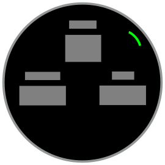
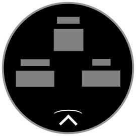

Views
Views are full-screen canvases for your information. They can display text, graphics, animations and other content.
View Stack
Garmin devices have limited screen real estate, so you typically do not have multiple views on the screen at the same time. Instead, views are stacked on top of each other. The user uses the back behavior to remove views from the stack.
View Transitions
The Garmin user interface toolkit offers several transitions to animate your views on and off screen. Views can:
Immediately appear
Slide from the left, right, top or bottom
Blink onto the screen
You can use these transitions to push a page on top of a page, push a page away to reveal the page below, or replace the current page with another one.
Use Transitions to Suggest Page Hierarchy
A common pattern in Garmin apps is to have a primary view of information and allow interaction via a menu hierarchy. When pushing the menus on screen, have them slide in from the right. Then, when the user dismisses them, they can slide away to the right.
Use Transitions to Suggest Page Loops
Another common pattern in Garmin apps is the page loop, where the main screen offers a carousel of information that the user can loop through. With this pattern, either the up/down buttons or up/down swipes allow navigation between the pages. You can use sliding page transitions to give the illusion of this carousel of pages.
Interaction Hints
Sometimes there isn’t enough visual space to present the user with both information and navigation actions. In those cases, you may want to give a hint on what button to press or where on screen to tap to bring up a selection menu:
Example
Button Hint
Touch Hint
